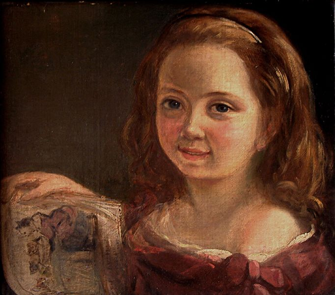

Módulo 2
Comentario
Realizar un comentario, en el diario de aprendizaje, sobre tu localidad o de tu oficio, tu ámbito de trabajo o de estudios para recuperar la historia de esas mujeres olvidadas o no suficientemente reconocidas.

La noticia sobre la que se pretende realizar la reflexión, en este diario de aprendizaje, es sobre la cita publicada el 04 de Junio 2021 en el sitio web igualdadenlaempresa.es donde se hace eco al poner de manifiesto como se agrava la brecha de género para las oncólogas en la actual pandemia de COVID-19.